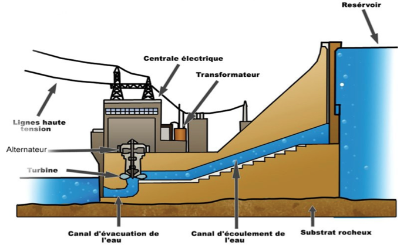

L’hydroélectricité est une source d’énergie renouvelable, c’est-à-dire qui ne consomme pas de ressource à échelle humaine, cela représente 16,3% de la production électrique dans le monde ce qui n’est donc pas négligable. Les avantage de cette source d’énergie sont : le faible coût de production, le peu d’émission de CO2 et la possibilité de stocker et de délivrer de l’électricité à volonté

Une centrale hydroélectrique est composeé essentiellement de :
l’énergie cinétique de l’eau dût à sa chute et transformée en energie mécanique grâce à une turbine reliée à un alternateur qui va transformer celle-ci en energie électrique.
Nous nous sommes demandé qu’elles étaient les paramétres à faire varier pour obtenir une production en puissance électrique maximal, puis nous avons décidé de nous intéresser plus particuliérement aux paramétres liés au conduit.
Nous allons donc étudier dans un premier temps la hauteur de chute de l’eau, le débité laquelle l’eau est lâchée et la hauteur d’eau dans le réservoir puis à d’autres paramétres que nous n’avons pas expérimenté mais qui reste indispensable à une telle installation.
La hauteur de chute de l’eau est un élément important dans une centrale, en effet, on peut classer les centrales en trois types de classement :
1. Les hautes chutes (supérieur à 200 mètres)
2. Les chutes moyennes (entre 50 et 200 mètres)
3. Les chutes basses (50 mètres)
La hauteur de chute permet de déterminer la turbine la plus adaptés aux conditions de la central avec les meilleurs rendements, par exemple :
La turbine Pelton pour les hautes chutes (avec un rendement de 90%)
La turbine Francis pour les chutes moyennes (avec un rendement entre 80 et 95%) La turbine Kaplan pour les chutes basses (avec un rendement de 90% à 95%)
Ce qui différentie ces différentes turbines, c’est leurs diamètres, vitesses de rotation et la forme des palles.
En théorie, plus la hauteur de chute de l’eau est importante, plus la puissance produite est importante. Nous avons voulu vérifier expérimentalement cette affirmation, pour cela, nous avons reproduit le fonctionnement d’une centrale hydroélectrique à notre échelle.
Pour ce faire nous avons utilisé une cuve avec un indicateur de niveau pouvant contenir environs 64cm d’eau, pour l’entrée de l’eau , nous avons assemblé deux tuyau entre eux afin de pouvoir augmenter plus ou moins la hauteur sans être gêné, en ce qui concerne la sortie d’eau on a fabriqué un « squelette » en forme d’angle droit pour notre tuyau qui était flexible afin que l’eau puisse arriver verticalement par rapport à la turbine.
Comme nous l’avons dit précédemment, notre objectif est de voir la variation de production de puissance électrique en fonction de la hauteur de la chute d’eau, nous avons donc eu à faire deux types de mesures :
la première est la hauteur en la sortie de l’eau du conduit et le point d’impact avec la première palle de la turbine nous réalisons cette mesure à l’aide d’un mètre ruban.
La deuxième mesure est celle de la puissance, à nos débuts, nous utilisions un wattmètre, cependant celui-ci n’était pas assez précis, nous avons donc décidé de mettre en œuvre la relation P=U*I (où P est la puissance en W, U est la tension en V et

I est l’intensité en A) pour cela il était donc indispensable de mesurer la tension à
l’aide d’un voltmètre et l’intensité à l’aide d’un ampèremètre.